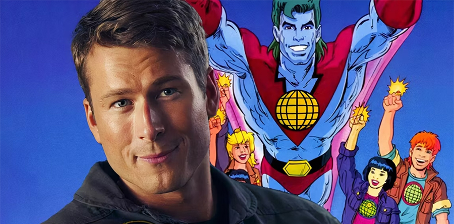
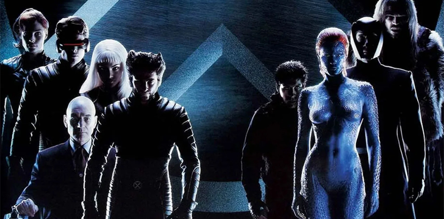
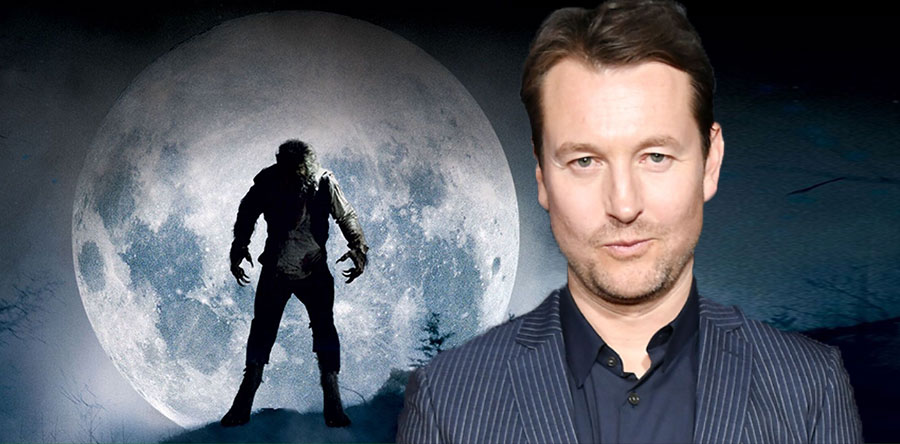

Leonardo DiCaprio produce con Glen Powell de protagonista Capitán Planeta y los planetarios
Allá por los albores de 2016 les informamos que Leonardo DiCaprio había anunciado que produciría la adaptación real de Capitán Planeta y los planetarios, serie animada ecologista de los 90 donde cinco jóvenes con anillos mágicos tenían la capacidad de convocar a Captain Planet para combatir y derrotar a los enemigos del medio ambiente, y nos preguntábamos si sería el propio DiCaprio quien protagonizaría también la peli interpretando al Capi. Pues bien, han tenido que pasar ocho años para poder responder a esa pregunta, y la respuesta es no. Leonarado DiCaprio ha fichado a Glen Powell para que se encasquete las mallas siderales por él. Un Glen Powell que tras interpretar al piloto chulito de Top Gun: Maverick está que no para, pues en su mesita de noche se acumulan más guiones que minions en la guarida de Gru: el remake de Perseguido, el remake de El cielo puede esperar, la recién filmada Twisters, Hit Man a punto de estreno… Hay que tener en cuenta que en 2016 el fenómeno superhéroe estaba a tope con Capitán América: Civil War petándolo en taquilla, y Vengadores: Infinity War y Vengadores: Endgame aún por llegar, y por eso todo quisqui en Hollywood quería subirse al carro, pero hoy en día el suflé superheroico ha bajado, por lo que producir una peli de un súper que los adolescentes no conocen es un melón por abrir, por mucho que la peli esconda una mensaje ecologista en su interior con todas las buenas intenciones del mundo.

Kevin Feige planea el regreso de los X-Men presentándolos en Avengers: Secret Wars
Kevin Feige tiene depositadas muchas esperanzas en el reboot de los X-Men en el MCU, y más aún tras el éxito de Deadpool y Lobezno, que con sus 1.300 millones de dólares recaudados, ha significado la segunda peli más taquillera de 2024, sólo por debajo de Del revés 2 (también de Disney). Con Los Cuatro Fantásticos finalmente debutando en el MCU hacia el final de la Fase 6, Avengers: Secret Wars se está preparando para presentar a los primeros X-Men. Esto permitiría reescribir la historia del MCU donde los X-Men y los Cuatro Fantásticos siempre habían sido parte de la franquicia, y ambos podrían convertirse en pilares importantes del futuro del universo. Lo que no deja de ser irónico, ya que a los X-Men y a los Cuatro Fantásticos se les impidió originalmente ser del MCU porque 20th Century Fox poseía sus derechos cinematográficos. Ahora, ambas franquicias están llegando y es solo cuestión de tiempo que tengan sus propias sagas. Además, 2028 marcará el vigésimo aniversario del lanzamiento del MCU, y el inicio de una nueva era de los X-Men parece una celebración perfecta para el Universo Cinematográfico de Marvel, así que esperamos un aniversario a lo grande.

Leigh Whannell dice de El hombre lobo que es una peli pequeña como El hombre invisible
¿Se han recuperado del susto que nos dio Blumhouse con el evento de presentación de El hombre lobo de Leigh Whannell? Si recuerdan la noticia, pusieron a un actor disfrazado y caracterizado de supuesto hombre lobo para que amenizara el acto, pero parecía más bien el tío Vampus con resaca o un homeless contratado para la ocasión a cambio de un bocata y una birra, lo que desató un cachondeo general en redes de órdago. Tanto es así, que en Blumhouse están haciendo campaña ahora para que se olvide la cagada y el público espere la peli con ilusión, por lo que ha hablado Leigh Whannell, su guionista y director: “Es una pieza complementaria de El hombre invisible. No quería que esta película fuera nostálgica o retro del Hombre Lobo de ninguna manera. Estaba escribiendo en mi libreta todo lo que se había hecho y luego decía: 'Está bien, esta es la lista de lo que no se debe hacer'. Espero que el público entre y diga: 'Oh, vaya, no había visto esa película de hombres lobo antes', cuando se enciendan las luces”. Y no sólo eso. Whannell cree saber por qué fracasó el proyecto de Dark Universe de Universal, de versionar sus monstruos clásicos con actores de la talla de Tom Cruise (la momia), Russell Crowe (Dr. Jeckyll), Johnny Depp (el hombre invisible) y Javier Bardem (el monstruo de Frankenstein), después del estrepitoso y merecido fracaso de The Mummy con Tom Cruise: “The Mummy's Dark Universe parecía una reacción a lo que estaba pasando con todo el material de superhéroes: el universo MCU y DC. El hombre lobo tiene más bien el enfoque de Joker. Hacerlo de forma más pequeña con piezas contenidas como lo hace Blumhouse, tiene mucho más sentido para mí". O sea, que el secreto no está en la salsa sino en las versiones de pequeño formato. Con El hombre invisible funcionó, así que esperamos que con El hombre lobo funcione de nuevo. In Leigh Whannell we trust!!!